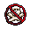
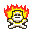
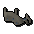
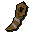
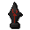
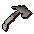

")
Spielerkampf- und Wildnis-Welten
Warnung | Einführung | Voraussetzungen | Erste Schritte
Sicherheitszonen| Tod und Beute | Spezielle Beutegüter
Wildnis-Welten | Fragen und Antworten
Sicherheitszonen| Tod und Beute | Spezielle Beutegüter
Wildnis-Welten | Fragen und Antworten
Warnung!
Spielerkampf-Welten sind sehr gefährlich und es gibt dort keine Grabsteine. Ihr werdet, sobald ihr euch auf einer solchen Welt einloggt, 'geschädelt' , sodass ihr bei einem Tod alle Gegenstände verlieren werdet - außerdem funktioniert das Gebet 'Gegenstandsschutz' auf diesen Welten nicht.
Die einzige Ausnahme besteht auf den 'Wildnis-Welten (+1 Gegenstand)' - dort behaltet ihr euren wertvollsten Gegenstand, wenn ihr sterbt.
Einführung

Auf Spielerkampf-Welten dreht sich alles um den Kampf gegen die tödlichsten aller Feinde: andere Mitspieler. Regeln gibt es wenige, dafür ist das Schlachtfeld riesig. Wer seine Gegner niederstreckt, bekleckert sich nicht nur mit Ruhm, sondern kann auch mächtige Gegenstände gewinnen. Eine ganze Welt wartet auf euch - wo werdet ihr kämpfen?
Voraussetzungen
Ihr benötigt eine Kampfstufe von mindestens 20 (ohne Beschwörung), um eine Spielerkampf-Welt zu betreten.
Erste Schritte
Beim Einloggen in eine Spielerkampf-Welt, bekommt ihr eine Warnung angezeigt und könnt es euch noch mal anders überlegen und zum Anmeldefenster zurückkehren, um dort eine andere Welt auszuwählen.
Bevor ihr euch ins Gemetzel stürzt, haltet noch einmal kurz ein und macht euch mit folgenden Hinweisen vertraut:
- Wenn ihr zum ersten Mal eine Spielerkampf-Welt betretet, werdet ihr ins Schloss von Lumbridge teleportiert, wo ihr euch in aller Ruhe den praktischen Ratgeber durchlesen könnt, der plötzlich in eurem Inventar aufgetaucht ist. Solltet ihr diesen verlieren, gibt euch der Unheilsprophet gerne einen neuen. Er kann euch auch das Warnfenster ausschalten, in dem angezeigt wird, wie viel eure mitgeführte Ausstattung wert ist.
- In Spielerkampf-Welten könnt ihr keine geliehenen Gegenstände mitnehmen.
- Nach dem Einloggen habt ihr Zeit, um euch zu orientieren. Währenddessen wird euch Immunität gewährt, also könnt ihr nicht angegriffen werden. Die Immunität endet, sobald ihr einen anderen Spieler angreift.
- Ähnliches gilt auch, wenn ihr euch teleportiert oder Verkehrsmittel benutzt (zum Beispiel, Boote). Solltet ihr das zu oft tun, wird euch in diesem Fall keine Immunität mehr gewährt.
- Die Beutegüter, die ihr von euren Feinden bekommt, sind nach dem Zufallsprinzip verteilt. Je mehr ihr riskiert und je länger ihr euch in gefährlichen Gebieten aufhaltet, desto wertvollere Gegenstände könnt ihr einheimsen. Hier könnt ihr mehr darüber erfahren, wie Belohnungen berechnet werden.
Ihr könnt nur Leute angreifen, deren Kampfstufe ähnlich hoch wie eure ist. Die Kampfstufe kann um 10% eurer Kampfstufe + 5 Stufen abweichen. Wenn ihr z.B. Kampfstufe 90 habt, könnt ihr Leute angreifen, deren Kampfstufe 14 Stufen unter oder über euch liegt. Die Stufen in der Wildnis werden ebenfalls dazugerechnet, wodurch dieser verwünschte Ort noch tödlicher wird.
Achtung: Ihr könnt mit jemandem kämpfen, dessen Kampfstufe außerhalb eurer Reichweite ist, wenn eure Kampfstufe in seiner Reichweite ist. Ob ihr jemanden angreifen könnt, wird also vom Standpunkt des Spielers mit der höheren Kampfstufe berechnet. Wenn euch jemand angreifen kann, könnt ihr ihn ebenfalls angreifen.
Wenn ihr einen Spieler angreifen könnt, wird seine Kampfstufe in grün, gelb oder rot dargestellt - ähnlich wie die Kampfstufe eines Monsters. Könnt ihr ihn nicht angreifen, erscheint seine Kampfstufe weiß.
Sicherheitszonen
 Auf den Spielerkampf-Welten gibt es sogenannte Sicherheitszonen - Gebiete, in denen sich keiner in irgendeiner Weise bekämpfen kann. Diese Zonen sind durch einen durchgestrichenen Totenschädel unterhalb der Minikarte gekennzeichnet. Dazu gehören:
- Banken
- Die große Markthalle
- Entrana
- Wiederbelebungsorte (bitte beachtet, dass die Wiederbelebungsorte in Falador, Krieg der Seelen und Camelot auf den Spielerkampf-Welten in die nächste Bank verlegt wurden)
- Schlosskeller in Lumbridge
- Fertigkeits-Gilden mit Eintrittsbeschränkungen (dazu gehören nicht die Gilden der Champions, Helden, Legenden und Krieger)
- Der Strand, an dem ihr angespült werdet, wenn der Trawler sinkt
In 'sicheren' Minispielen könnt ihr auch auf Spielerkampf-Welten Player-Killing betreiben. Dabei verliert ihr aber nichts, sondern werdet einfach in den Startbereich zurückteleportiert.
Wenn ihr euch während eines Kampfs in eine Sicherheitszone flüchtet, werden in einem Anzeigefenster 10 Sekunden zurückgezählt. Während dieser Zeit könnt ihr immer noch angegriffen und getötet werden, obwohl ihr euch in einer Sicherheitszone befindet.
Krisenherde
 Einige Gebiete werden als besonders gefährlich angesehen, weil sie bei Spielern so beliebt sind oder dort die Kombination von Monstern und Spielern doppelt tödlich ist. Diese Orte werden 'Krisenherde' genannt und mit einem flammenden Schädel gekennzeichnet (s. links).
Krisenherde beeinflussen euer Beutepotenzial (mehr darüber hier) und erhöhen alle 30 Minuten, in denen ihr euch darin aufhaltet, den Betrag, den ihr bei einem Sieg gewinnen könnt, um ein Vielfaches. Daher solltet ihr euch so oft wie möglich in Krisenherden aufhalten.
Tod und Beute

Habt ihr den Kampf gewonnen, werdet ihr einige Gegenstände neben der Leiche eures Gegners finden. Viele davon werden nach dem Zufallsprinzip vom Spiel generiert und hängen davon ab, wie viel euer Gegner dabei hatte, wie viel ihr bei euch tragt, wie hoch der Unterschied zwischen eurer Kampfstufe und der eures Kontrahenten war, wie lange ihr außerhalb von Sicherheitszonen auf der Spielerkampf-Welt überlebt habt und wie viele Spieler ihr in letzter Zeit besiegt habt. Wenn ihr euch oft in Sicherheitszonen flüchtet, fällt eure Beute weniger großzügig aus, als wenn ihr euch viel in Krisenherden aufhaltet.
Eine detaillierte Erklärung der Beuteverteilung auf Spielerkampf-Welten findet ihr hier.
Meistens erhaltet ihr gewöhnliche Ausrüstungsgegenstände, wie ihr sie auch auf den friedlicheren Welten finden oder herstellen könnt, aber manchmal könntet ihr das Glück haben, auf einen besonderen Spielerkampf-Gegenstand zu stoßen. Wenn euer Beutepotenzial hoch genug ist, findet ihr vielleicht sogar ein antikes Artefakt, das ihr bei Mandrith in der Bank von Edgeville oder seinem Bruder Nastroth im Schlosshof von Lumbridge gegen eine schöne Summe Geld eintauschen könnt. Der Preis, den die Brüder zahlen, hängt von der Art des Artefakts ab. Zertifikate werden nicht entgegengenommen.
| Artefakt | Wert |
|  Kaputte Statue (Kopf) |
5.000 GM |
 Karaffe (3. ZA) |
10.000 GM |
|  Bronzene Drachenklaue |
20.000 GM |
 Antiker Psalter (Steg) |
30.000 GM |
 Amphore von Saradomin |
40.000 GM |
 Bandos-Schnitzerei |
50.000 GM |
 Saradomin-Schnitzerei |
75.000 GM |
 Zamorak-Medaillon |
100.000 GM |
 Armadyl-Totem |
150.000 GM |
| Artefakt | Wert |
 Kohlebecken von Guthix |
200.000 GM |
 Rubinkelch |
250.000 GM |
 Statuette von Bandos |
300.000 GM |
 Statuette von Saradomin |
400.000 GM |
 Statuette von Zamorak |
500.000 GM |
 Statuette von Armadyl |
750.000 GM |
 Statuette von Seren |
1.000.000 GM |
|  Antike Statuette |
5.000.000 GM |
Spezielle Beutegüter
Es gibt verschiedene Arten von Ausrüstung speziell für Spielerkampf-Welten, die eure Chancen im Kampf bedeutend verbessern oder euch mehr Erfahrungspunkte verschaffen - solltet ihr so waghalsig sein, auf Spielerkampf-Welten eure Fertigkeiten zu trainieren.
Beachtet, dass diese Gegenstände euer Beutepotenzial nicht senken. Die Gegenstände werden euch zusätzlich zum normalen Potenzial verliehen.
Unselige Drachen-Relikte
Wenn ihr Glück habt, könnt ihr schwer beschädigte Exemplare von Drachen-Ausrüstung finden. Diese Spielerkampf-Gegenstände haben die gleichen Boni wie normale Drachen-Ausrüstung (klickt hier, um eine Liste der Boni zu sehen). Ihr erkennt die Relikte aber an den verblassten Farben.Die Gegenstände bleiben euch eine halbe Stunde lang erhalten, bevor sie zu Staub zerfallen. Unselige Drachen-Gegenstände können nicht repariert werden. Von den folgenden Drachen-Gegenständen gibt es unselige Relikte:
- Kettenhemd
- Halbhelm
- Beinlinge
- Plattenrock
- Vierecksschild
- Streitaxt
- Dolch
- Langschwert
- Streitkolben
- Krummsäbel
- Speer
Rauf-Handschuhe (nur für Mitglieder)
Durch ihr besonderes Design verleihen euch Rauf-Handschuhe zeitweise mehr Erfahrung, wenn ihr auf Spielerkampf-Welten trainiert. Ihr bekommt einen 50%-Bonus auf alle EP in der Fertigkeit, die ihr auf der Spielerkampf-Welt ausübt. Wenn ihr die Handschuhe in der Wildnis auf einer Spielerkampf-Welt tragt, gibt es sogar noch mehr - den vierfachen Wert der normalen EP!
Rauf-Handschuhe halten nicht ewig, sondern lösen sich auf, nachdem ihr einige Male in den Genuss der entsprechenden Erfahrung gekommen seid.
Rauf-Handschuhe sind für die folgenden Fertigkeiten verfügbar:
- Nahkampf
- Magie
- Fernkampf
- Gewandtheit
- Kochen
- Funkenschlagen
- Fischen
- Jagen
- Bergbau
- Gebet
- Schmieden
- Diebstahl
- Holzfällerei
Ausrüstung der Ahnen-Krieger (nur für Mitglieder)
Diese Ausrüstung stammt aus den uralten Zeiten, als große Krieger sich auf RuneScape spektakuläre Schlachten lieferten. Angezogen von dem großen Blutvergießen auf den Spielerkampf-Welten kommt sie nun wieder an die Oberfläche.
Die Gegenstände gibt es in zwei Versionen. Die Version, für die ihr hohe Anforderungen an eure Fertigkeitsstufe erfüllen müsst, bleibt euch eine Stunde lang erhalten. Für die andere Version benötigt ihr lediglich Stufe 20, dafür hält sie nur 15 Minuten. Anders als die Gegenstände aus den Grabhügeln können diese Gegenstände nicht repariert werden.
Außer Zuriels Stab haben diese Waffen einen Spezialangriff, über den ihr hier mehr erfahrt.
Zuriels Stab kann sowohl Elementar-Angriffe als auch die Magie der Ahnen zaubern. Während ihr den Stab handhabt, teilt ihr außerdem 10% mehr Magieschaden aus. Zusätzlich dazu bekommen Leute, die die Magie der Ahnen benutzen, Zugang zu einem weiteren Kapitel dieses Zauberbuchs. Mehr darüber erfahrt ihr hier.
Statius' Ausrüstung
| Gegenstand | Benötigte Stufe |
||||||||||||||||||
| Angriffsboni | Verteidigungsboni | Sonstiges | |||||||||||||||||
![[Bild: Stechen]](../../img/main/kbase/table_text/stab1.gif "Stechen") |
![[Bild: Schlitzen]](../../img/main/kbase/table_text/slash1.gif "Schlitzen") |
![[Bild: Schmettern]](../../img/main/kbase/table_text/crush1.gif "Schmettern") |
![[image: Magie]](../../img/main/kbase/table_text/magic1.gif "Magie") |
![[Bild: Fernkampf]](../../img/main/kbase/table_text/range1.gif "Fernkampf") |
|
|
|
|
|
![[Bild: Beschwörung]](../../img/main/kbase/table_text/summoning1.gif "Beschwörung") |
![[Bild: Stärke]](../../img/main/kbase/table_text/strength1.gif "Stärke") |
![[Bild: Gebet]](../../img/main/kbase/table_text/prayer1.gif "Gebet") |
|||||||
![[Bild]](../../img/main/kbase/combat/pvp/member/full_helm.gif) Statius' Vollhelm |
20/78 |
+ 3 | + 3 | + 4 | - 6 | - 2 | + 65 | + 70 | + 63 | - 1 | + 71 | + 15 | + 3 | + 0 | |||||
![[Bild]](../../img/main/kbase/combat/pvp/member/platebody.gif) Statius' Plattenpanzer |
20/78 |
+ 5 | + 5 | + 7 | - 30 | - 10 | + 154 | + 145 | + 121 | - 6 | + 157 | + 60 | + 5 | + 0 | |||||
![[Bild]](../../img/main/kbase/combat/pvp/member/platelegs.gif) Statius' Plattenbeinlinge |
20/78 |
+ 3 | + 3 | + 5 | - 21 | - 7 | + 110 | + 106 | + 97 | - 4 | + 121 | + 30 | + 3 | + 0 | |||||
![[Bild]](../../img/main/kbase/combat/pvp/member/warhammer.gif) Statius' Kriegshammer |
20/78 |
- 4 | - 4 | + 123 | + 0 | + 0 | + 0 | + 0 | + 0 | + 0 | + 0 | + 0 | + 114 | + 0 | |||||
Vestas Ausrüstung
| Gegenstand | Benötigte Stufe |
||||||||||||||||||
| Angriffsboni | Verteidigungsboni | Sonstiges | |||||||||||||||||
|
|
|
|
|
|
|
|
|
|
|
|
|
|||||||
![[Bild]](../../img/main/kbase/combat/pvp/member/chainbody.gif) Vestas Kettenhemd |
20/78 |
+ 5 | + 7 | + 7 | - 15 | + 0 | + 120 | + 131 | + 145 | - 3 | + 140 | + 60 | + 6 | + 0 | |||||
![[Bild]](../../img/main/kbase/combat/pvp/member/plateskirt.gif) Vestas Plattenrock |
20/78 |
+ 3 | + 5 | + 5 | - 17 | - 4 | + 86 | + 100 | + 112 | - 4 | + 118 | + 30 | + 3 | + 0 | |||||
![[Bild]](../../img/main/kbase/combat/pvp/member/longsword.gif) Vestas Langschwert |
20/78 |
+ 106 | + 121 | - 2 | + 0 | + 0 | + 1 | + 4 | + 3 | + 0 | + 0 | + 0 | + 118 | + 0 | |||||
![[Bild]](../../img/main/kbase/combat/pvp/member/spear.gif) Vestas Speer |
20/78 |
+ 133 | + 113 | + 120 | + 0 | + 0 | + 18 | + 21 | + 21 | + 0 | + 0 | + 0 | + 122 | + 0 | |||||
Zuriels Ausrüstung
| Gegenstand | Benötigte Stufe |
||||||||||||||||||
| Angriffsboni | Verteidigungsboni | Sonstiges | |||||||||||||||||
|
|
|
|
|
|
|
|
|
|
|
|
|
|||||||
![[Bild]](../../img/main/kbase/combat/pvp/member/hood.gif) Zuriels Kapuze |
20/78 20/78 |
+ 0 | + 0 | + 0 | + 8 | - 2 | + 20 | + 16 | + 22 | + 8 | + 0 | + 15 | + 0 | + 0 | |||||
![[Bild]](../../img/main/kbase/combat/pvp/member/robe_top.gif) Zuriels Wams |
20/78 20/78 |
+ 0 | + 0 | + 0 | + 35 | - 10 | + 63 | + 45 | + 74 | + 35 | + 0 | + 60 | + 0 | + 0 | |||||
![[Bild]](../../img/main/kbase/combat/pvp/member/robe_bottom.gif) Zuriels Robenrock |
20/78 20/78 |
+ 0 | + 0 | + 0 | + 25 | - 7 | + 38 | + 35 | + 44 | + 24 | + 0 | + 30 | + 0 | + 0 | |||||
![[Bild]](../../img/main/kbase/combat/pvp/member/staff.gif) Zuriels Stab* |
20/78 20/78 |
+ 13 | - 1 | + 65 | + 18 | + 0 | + 5 | + 7 | + 4 | + 18 | + 0 | + 0 | + 72 | + 0 | |||||
* Während ihr den Stab handhabt, teilt ihr 10% mehr Magieschaden aus.
Morrigans Ausrüstung
| Gegenstand | Benötigte Stufe |
||||||||||||||||||
| Angriffsboni | Verteidigungsboni | Sonstiges | |||||||||||||||||
|
|
|
|
|
|
|
|
|
|
|
|
|
|||||||
![[Bild]](../../img/main/kbase/combat/pvp/member/coif.gif) Morrigans Haube |
20/78 20/78 |
+ 0 | + 0 | + 0 | - 5 | + 13 | + 8 | + 11 | + 14 | + 8 | + 12 | + 15 | + 0 | + 0 | |||||
![[Bild]](../../img/main/kbase/combat/pvp/member/leather_body.gif) Morrigans Harnisch |
20/78 20/78 |
+ 0 | + 0 | + 0 | - 15 | + 36 | + 61 | + 53 | + 66 | + 75 | + 62 | + 60 | + 0 | + 0 | |||||
![[Bild]](../../img/main/kbase/combat/pvp/member/chaps.gif) Morrigans Beinlinge |
20/78 20/78 |
+ 0 | + 0 | + 0 | - 10 | + 23 | + 35 | + 29 | + 37 | + 46 | + 35 | + 30 | + 0 | + 0 | |||||
![[Bild]](../../img/main/kbase/combat/pvp/member/javelin.gif) Morrigans Pilum |
20/78 |
+ 0 | + 0 | + 0 | + 0 | + 105 | + 0 | + 0 | + 0 | + 0 | + 0 | + 0 | + 0 | + 0 | |||||
|  Morrigans Wurfaxt |
20/78 |
+ 0 | + 0 | + 0 | + 0 | + 93 | + 0 | + 0 | + 0 | + 0 | + 0 | + 0 | + 0 | + 0 | |||||
Wildnis-Welten
 Einige Spielerkampf-Welten werden von Mandrith kontolliert, der von den ersten menschlichen Stämmen abstammt, die zum Anbeginn der Zeit die ersten Morde begingen. Früher stand er am Vulkan in der Mitte der Wildnis, der als Mahnmal der Götter angesehen wird. Jetzt ist er nach Edgeville übergesiedelt.
Einige Spielerkampf-Welten werden von Mandrith kontolliert, der von den ersten menschlichen Stämmen abstammt, die zum Anbeginn der Zeit die ersten Morde begingen. Früher stand er am Vulkan in der Mitte der Wildnis, der als Mahnmal der Götter angesehen wird. Jetzt ist er nach Edgeville übergesiedelt. Um eine Wildnis-Welt zu betreten, müsst ihr in der Wildnis, in Edgeville oder an der großen Markthalle stehen, da der Rest von Gielinor auf diesen Welten nicht existiert. Edgeville und die große Markthalle sind sichere Gebiete, aber nördlich des Grabens wird es gefährlich. Auf diesen Welten gelten die gleichen Regeln wie auf den normalen Spielerkampf-Welten, plus das Kopfgeldjäger-System.
Kopfgeldjäger
Sobald ihr euch 30 Minuten in einem unsicheren Gebiet auf einer Wildnis-Welt aufgehalten habt, sucht Mandrith einen passenden Gegner für euch aus. Das kann durchaus ein paar Minuten dauern (in seltenen Fällen eventuell bis zu einer Stunde). In der Zwischenzeit könnt ihr alles machen, was ihr auch auf normalen Spielerkampf-Welten treibt. Sobald euch ein Ziel zugewiesen wurde, erscheint der Name des Ziels rechts oben im Spielfenster und ein Pfeil zeigt euch an, in welcher Richtung sich das Ziel befindet. Passt aber gut auf, denn euer Ziel hat es auch auf euch abgesehen. Euer Ziel wird sich immer in eurer Kampfstufen-Spanne (+/- 5 Stufen) befinden.In dem Kasten oben rechts am Bildschirmrand könnt ihr sehen, wie hoch die Wahrscheinlichkeit ist, dass euch ein Ziel zugewiesen wird. Wenn die Chance auf ein Ziel steigt, wird das Rot allmählich dunkler.
Um Mandriths Vorstellungen von Ehre aufrecht zu halten, müsst ihr euch an ein paar Regeln halten:
- Ihr dürft euch nicht länger als 10 Minuten in einem sicheren Gebiet aufhalten. Die Minuten werden kumulativ gezählt, also solltet ihr nicht ständig ein sicheres Gebiet betreten und wieder verlassen, um euch vor Angriffen zu schützen. Falls ihr länger als 10 Minuten verweilt, wird euer Ziel entfernt und ihr müsst mindestens 30 Minuten warten, bevor euch ein neues zugewiesen wird.
- Ihr dürft euch nicht länger als 10 Minuten ausloggen oder die Welt wechseln, ansonsten wird Mandrith euer Ziel entfernen.
- Falls sich euer Ziel nicht an die Regeln hält, wird euch so schnell es geht ein neues zugewiesen.
- Der Stufenabstand, der bestimmt, welche Spieler ihr angreifen könnt, funktioniert auf Wildnis-Welten etwas anders als auf normalen Spielerkampf-Welten. Der Abstand vergrößert sich, je tiefer ihr euch in die Wildnis begebt. Die Anzeige, wie groß der Abstand derzeit ist, seht ihr unter der Anzeige, ob ihr euch in einem sicheren oder unsicheren Gebiet befindet. Euer Ziel könnt ihr in jedem gefährlichen Gebiet angreifen, unabhängig von eventuellen Stufenbeschränkungen.
- Alle verfügbaren Teleport-Zauber und -Gegenstände auf Wildnis-Welten werden euch nach Edgeville bringen.
Wenn euer Ziel in einem Einzelkampf-Gebiet mit jemand anderem kämpft, könnt ihr das Gefecht unterbrechen und euch auf euer Ziel stürzen, wobei sein ursprünglicher Gegner aus dem Kampf ausgeschlossen wird. Weiterhin bleibt euer Ziel euer Ziel, wenn ihr es besiegt, aber nicht genug Schaden angerichtet habt, um als 'Held' zu zählen (dies funktioniert wie die Belohnungen bei aktiver Beuteteilung). Euer Ziel ändert sich nur, wenn einer von euch den anderen besiegt oder die Wildnis für mehr als 10 Minuten verlässt.
Kopfgeld-Beute
Wenn ihr euer Ziel besiegt, könnt ihr (zusätzlich zur generierten Beute) eventuell sogar noch mehr Beute aus deren Inventar erhalten. Außerdem wird euer Beutepotenzial um eine Stunde Spielzeit in einem Krisenherd erhöht. Aus diesem Grund kann das Kämpfen auf Wildnis-Welten sehr lukrativ für euch sein. Außerdem ist es viel herausfordernder, euer Ziel quer durch die Wildnis zu jagen.
Häufige Fragen
Welche Gebiete von RuneScape sind auf Spielerkampf-Welten gesperrt?
Die folgenden Gebiete wurden auf Spielerkampf-Welten deaktiviert:
- Angriffsarena der Barbaren
- Burgenkampf
- Duell-Arena
- Faust des Guthix
- Krieg der Seelen
- Gestohlene Schöpfung
- Die Tränen des Guthix
- Feuriger Rum
- Kampfgruben der TzHaar
- Falador-Partyraum
Außerdem funktioniert der Gegenstandsverleih auf Spielerkampf-Welten nicht.
Wie kann ich die Wahrscheinlichkeit erhöhen, dass ich wertvolle Beutegüter bekomme?
Auf Spielerkampf-Welten müsst ihr Gegenstände im Wert von mindestens 75.000 Goldmünzen (bzw. 25.000 auf freien Welten) dabeihaben, um euer 'Beutepotenzial' zu steigern - bitte beachtet, dass Zertifikate nicht miteinberechnet werden. Das Beutepotenzial misst den Betrag, den ihr beim Sieg über einen anderen Spieler gewinnen könnt. Der Maximalwert ist höher, wenn ihr euch in einem Krisenherd aufhaltet, und kann durch längeren Aufenthalt in Krisenherden weiter gesteigert werden.
Euer Beutepotenzial nimmt auch zu, wenn ihr euch außerhalb eines Krisenherds aufhaltet - allerdings nicht so schnell. Euer Potenzial steigt an, wenn ihr euch 30 Minuten außerhalb einer Sicherheitszone aufgehalten habt.
Bei einem Sieg über einen Mitspieler berechnet das Spiel eure Beute. Diese kann den Maximalwert eures Beutepotenzials nie überschreiten und wird von diesem abgezogen. Unter anderem beeinflussen also die folgenden Faktoren die Höhe eurer Beute:
- Die Höhe eures Beutepotenzials
- Eure Kampfstufe
- Die Kampfstufe eures Gegners
- Der Wert der Gegenstände, die euer Gegner verloren hat
Die wichtigsten Faktoren sind der Wert der Gegenstände, die ihr aufs Spiel setzt, wie viel euer Gegner fallen lässt und wie lange ihr überlebt habt (vorzugsweise in einem Krisenherd). Eine gute Strategie besteht darin, den Wert eurer potenziellen Beute zu erhöhen, indem ihr eine Zeit lang in einem Krisenherd trainiert (noch besser wirkt es sich aus, wenn ihr Rauf-Handschuhe besitzt) und dann versucht, ein oder zwei Spieler zu besiegen. So sollte die Wahrscheinlichkeit hoch sein, dass ihr bessere Beutestücke erhaltet. Dann könnt ihr weiter trainieren, damit sich der Wert der potenziellen Beute wieder erhöht.
Bitte beachtet, dass wenn ihr sterbt, der Wert eurer zukünftigen Beute ansteigt, um euren Verlust auszugleichen. Dies entspricht aber nicht dem Wert, den ihr verloren habt - Sterben ist keine gute Art, um tolle Beute zu erhalten.
Kann sich mein Beutepotenzial auch verringern?
Euer Beutepotenzial verringert sich, wenn ihr einen Mitspieler besiegt, der mindestens 75.000 Goldmünzen riskiert hat, und somit eine Belohnung gewinnt.
Euer Beutepotenzial könnte auch sinken, wenn ihr euch während eines Kampfs wegteleportiert.
Wie finde ich heraus, wie viel ich riskiere?
Die Anzeige 'geschützte Gegenstände nach einem Tod' (in eurem Ausrüstungsfenster) gibt euch einen Überblick über den Gesamtwert eurer Gegenstände und den Gesamtwert, den ihr riskiert. Wenn ihr genug riskiert und euch für gutes Beutepotenzial qualifiziert, erscheinen die von euch riskierten Gegenstände in Grün. Klickt hier, um mehr über die Anzeige 'geschützte Gegenstände nach einem Tod' zu erfahren.
Wie finde ich heraus, wie viel Beutepotenzial ich erhalte?
Im Spielfenster wird angezeigt, wie viel Beutepotenzial euch beim nächsten Sieg zustehen. Natürlich steigert es sich nur, wenn euer Ziel entsprechend viel Einsatz riskiert. Ihr müsst es nicht auf 100 % steigern, da dies nur aussagt, dass sich das Beutepotenzial nicht weiter steigern lässt (im Vergleich zum Potenzial, dass ihr bereits habt).
Ich kann diesen Gegenstand momentan nicht fallen lassen - warum nicht?
Damit die Spielerkampf-Welten für alle fair sind, kann man nach einem Kampf mit einem anderen Spieler für 10 Sekunden nichts fallen lassen, was mehr als 1.000 Goldmünzen wert ist. Dies soll verhindern, dass Spieler den Wert der riskierten Gegenstände auf unter 75.000 Goldmünzen reduzieren; durch diese Maßnahme erhalten die anderen Spieler bessere Belohnungen.

Weitere Artikel in Kampf
|
|
|
Weiterführende Informationen Wenn euch dieser Artikel nicht weitergeholfen hat, könnt ihr in den folgenden Kapiteln der RuneScape-Webseite mehr Informationen finden:
|
|